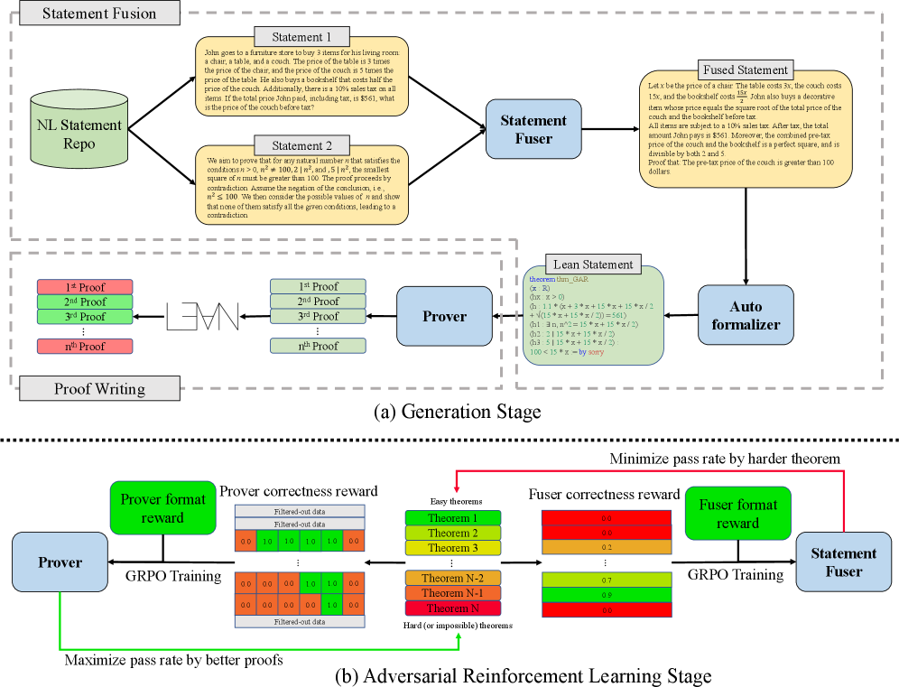

GAR trains a problem composer and Lean prover adversarially, evaluated on MiniF2F and ProofNet Lean benchmarks.
Abstract
Solving math problems through verifiable languages such as Lean has significantly impacted both the mathematics and computer science communities. Current state-of-the-art models are often trained with expensive online Reinforcement Learning (RL) or expert iteration. However, these approaches rely on fixed problem sets, which causes inefficient training and limits the model to tackle complex problems. To overcome these limitations, we propose **GAR**: *Generative Adversarial Reinforcement learning*, a comprehensive RL training framework that jointly trains the problem composer and solver in an adversarial loop. **GAR** introduces an implicit curriculum learning mechanism, which aligns task difficulty with the prover's evolving capability. It thereby improves the training efficiency and enables stronger performance of proving advanced theorems. Experiments show that with **GAR** training, Goedel-Prover-V2-8B and DeepSeek-Prover-V2-7B achieve an average relative improvement in pass@32 of **4.20%** on MiniF2F-Test benchmark, while DeepSeek-Prover-V2's pass@32 on ProofNet-Test increases from 22.58% to **25.81%**. Beyond formal proving, **GAR** establishes a general RL paradigm for co-evolution of problem generation and solving under verifiable environments. The training code for this paper is open-sourced in https://github.com/RickySkywalker/GAR-Official
Problem
Current state-of-the-art formal theorem provers trained with online reinforcement learning or expert iteration rely on fixed problem sets, leading to inefficient training and limited ability to tackle complex problems.
Approach
GAR (Generative Adversarial Reinforcement Learning) jointly trains a problem composer (statement fuser) and a prover in an adversarial loop. The statement fuser generates new Lean 4 theorem statements by combining pairs of existing natural-language statements, creating an implicit curriculum that aligns task difficulty with the prover's evolving capability. The prover is trained via RL on these dynamically generated problems.

Figure 1: GAR Training Framework: Each iteration of GAR consists two stages. (a) Generation Stage : Pairs of NL statements are sampled from the base repository and combined by the statement fuser to create more challenging problems that fit the current model’s capability. Then, these statements are autoformalized and submitted to the prover to write multiple proofs. Subsequently, the proofs are ch
Results
GAR training of Goedel-Prover-V2-8B and DeepSeek-Prover-V2-7B yields average relative improvements in pass@32 on MiniF2F-Test and ProofNet-Test. The adversarial training induces progressively harder statements over iterations, confirming the implicit curriculum mechanism.